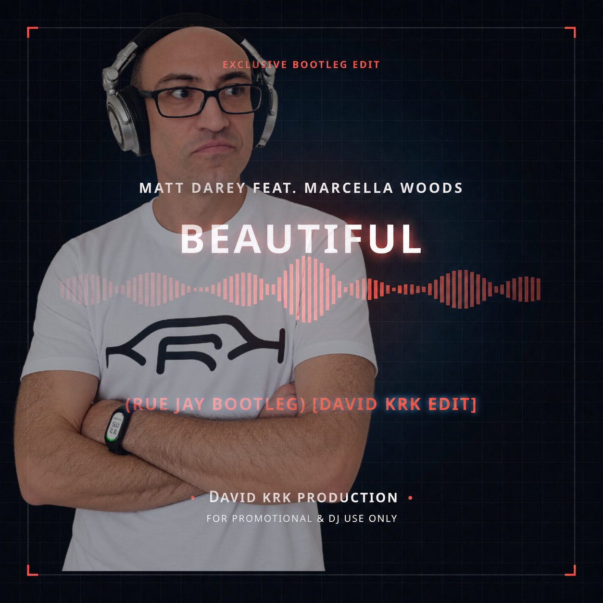

David KRK
Accueil
Home
Inicio
Hasiera
الرئيسية
Головна
Site officiel de David KRK
DJ et producteur international de musique Techno.
Découvrez sa musique, sa biographie et ses événements.
Official Website of David KRK
International Techno Music DJ & Producer.
Discover his music, biography, and events.
Sitio web oficial de David KRK
DJ y productor internacional de música Techno.
Descubre su música, biografía y eventos.
David KRK-ren webgune ofiziala
Techno musikako nazioarteko DJ eta ekoizlea.
Ezagutu bere musika, biografia eta ekitaldiak.
الموقع الرسمي لديفيد كرك
دي جي ومنتج عالمي لموسيقى التكنو.
اكتشف موسيقاه وسيرته الذاتية وفعالياته.
Офіційний сайт David KRK
Міжнародний техно-діджей та продюсер.
Відкрийте для себе його музику, біографію та події.

EXCLUSIVE BOOTLEG EDIT
Beautiful — David KRK Edit
Listen to a preview of my edit, crafted for the dancefloor and DJ mixing.
Le lecteur externe se charge à la demande pour accélérer l’affichage de la page.